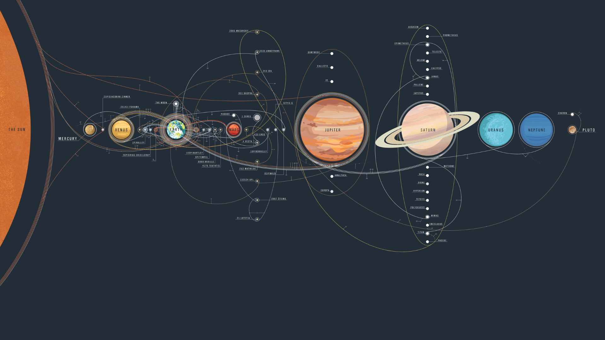

This project is made for the purpose of helping people to choose the best time and location for their outdoor
activities based on the weather conditions. The project uses data from NASA's POWER
(Prediction Of Worldwide Energy Resource) API to provide accurate and reliable weather information.
The user can input their desired date, time, location, and weather conditions, and the project will
return a list of suitable options for outdoor activities. The project is designed to be user-friendly
and accessible to everyone, regardless of their technical skills. It aims to promote outdoor activities
and encourage people to spend more time in nature while ensuring their safety and comfort.

About project
This project was developed as part of the NASA Space Apps Challenge to provide a smart and accessible way
to connect people with reliable weather data for outdoor planning.
Our goal is to make outdoor activities safer, more enjoyable, and more predictable.
By integrating data from NASA’s POWER (Prediction Of Worldwide Energy Resources) API,
the platform delivers precise information on temperature, humidity, solar radiation, wind speed, and cloud coverage.
This data is processed and presented in a simple, user-friendly interface.
Users can enter their preferred date, time, location, and desired weather conditions,
and the system will analyze NASA’s datasets to recommend the most suitable windows for outdoor events.
Whether it’s a sports activity, family gathering, hiking trip, or community event,
the project helps reduce uncertainty and maximize comfort.
Beyond usability, this solution highlights the importance of open scientific data and demonstrates
how space-based observations can directly improve daily life on Earth.
It reflects our team’s mission to encourage people to spend more time in nature while ensuring
their safety through accurate, science-driven insights.
Desired Weather
s why this section was created: to help you choose the perfect time and place for your outdoor activities, based on real NASA weather data.
By entering your desired weather preferences — such as temperature, humidity, wind speed, or cloud coverage — our system connects directly to NASA’s POWER (Prediction Of Worldwide Energy Resources) API. It then analyzes satellite-based data to find locations and timeframes that best match your chosen conditions.
This feature allows users to plan smarter:
🌍 Select the region you’re interested in.
☀️ Choose your preferred climate conditions.
🕒 Get results that align with your comfort and activity needs.
We built this tool to make it easier for everyone to experience the outdoors safely and comfortably, while also raising awareness about the impact of weather patterns on human activity.
So, please enter your desired weather details below — and let science help you find the best possible conditions.
Please Choose
Location
Choosing the right location is just as important as choosing the right weather.
Different areas experience unique climate patterns — temperature, humidity, and
sunlight can all change dramatically from one place to another.
Select your desired country, region, and city to explore real-time data and
predictions powered by NASA’s POWER system.
Please Choose Location
Date
Selecting the right date and time is crucial when planning any outdoor activity or event.
Weather conditions can change drastically throughout the day — what’s sunny in the morning might turn cloudy or rainy by the afternoon.
In this section, you can choose the specific date and time you’re interested in, allowing our system to fetch accurate data from NASA’s POWER API for that exact period.
This helps you understand how temperature, humidity, wind, and sunlight vary over time.
By aligning your schedule with favorable weather conditions, you can maximize comfort, safety, and efficiency — whether it’s for recreation, research, or environmental planning.
Our goal is to help you plan your activities with precision and confidence, supported by reliable climate data.

.jpg)
.jpg)
.jpg)
.jpg)